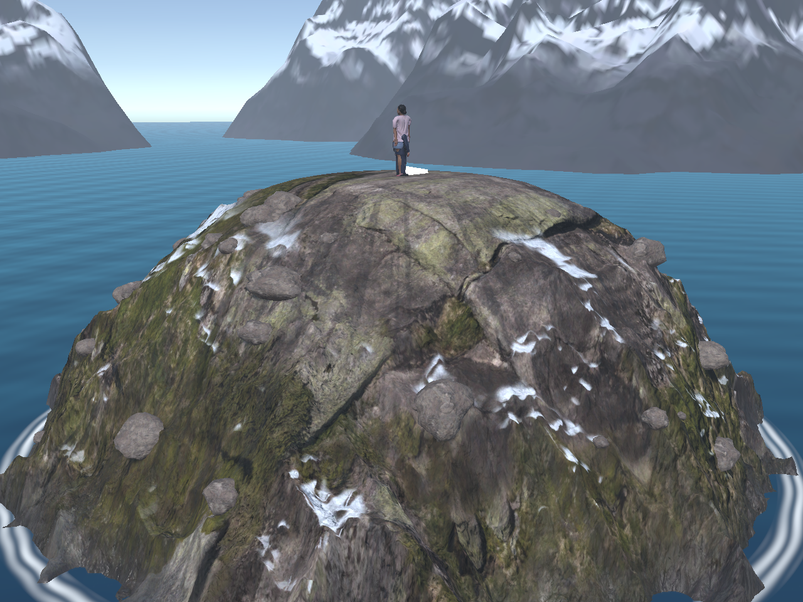
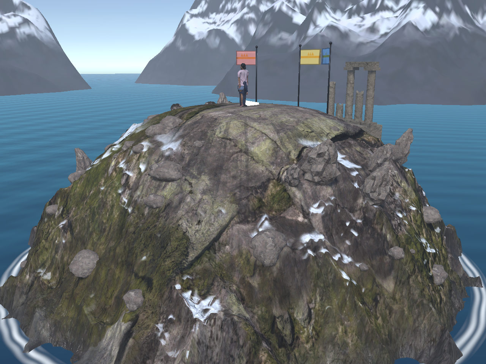
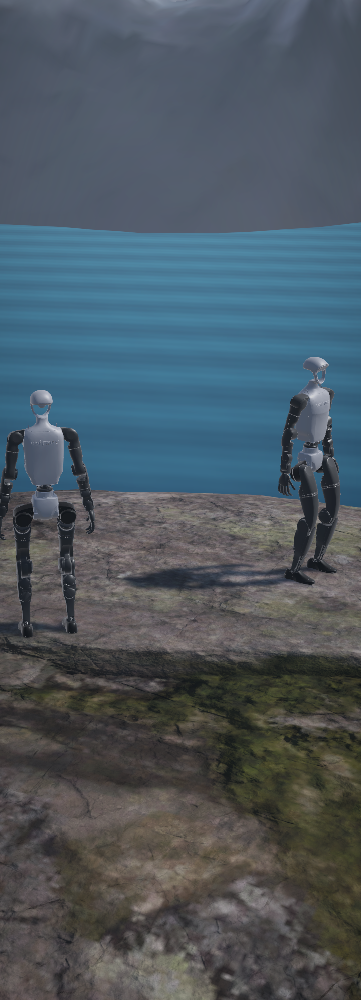
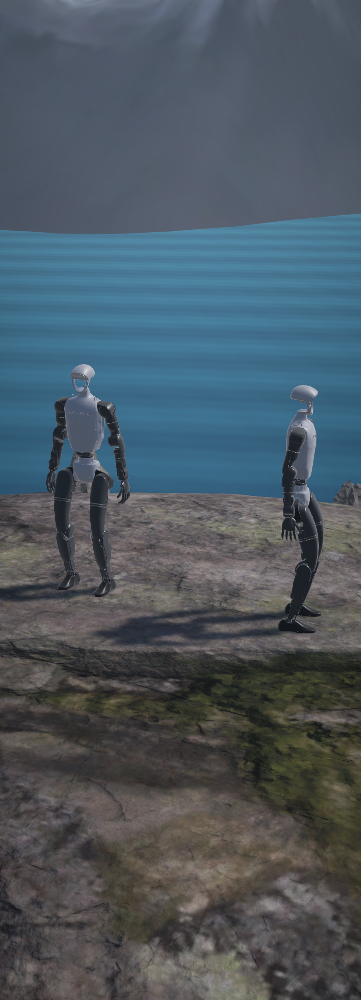
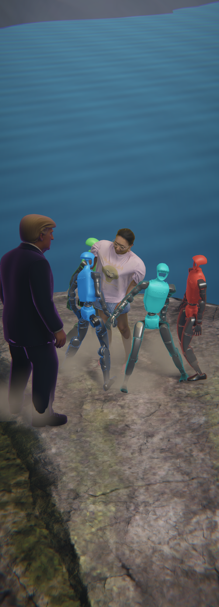
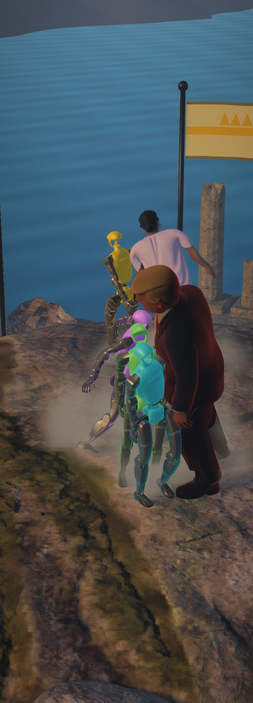
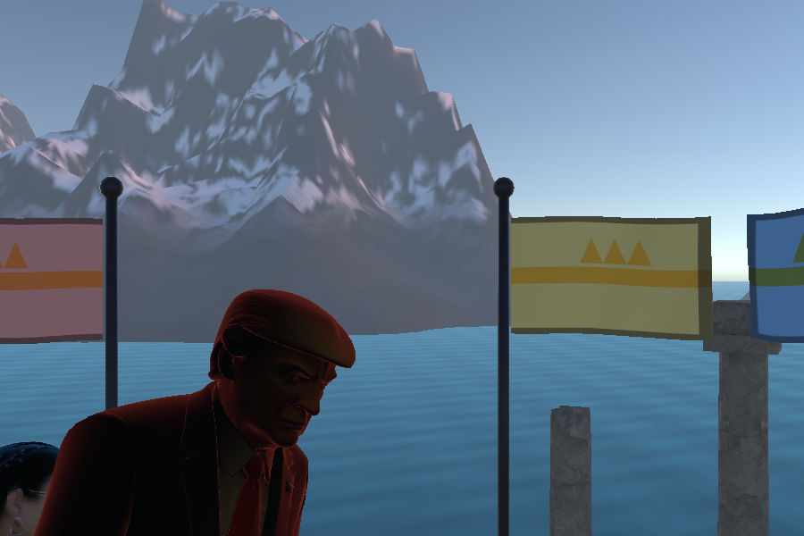
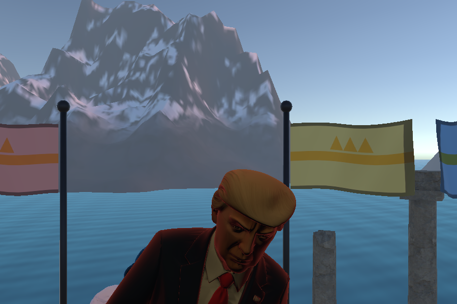
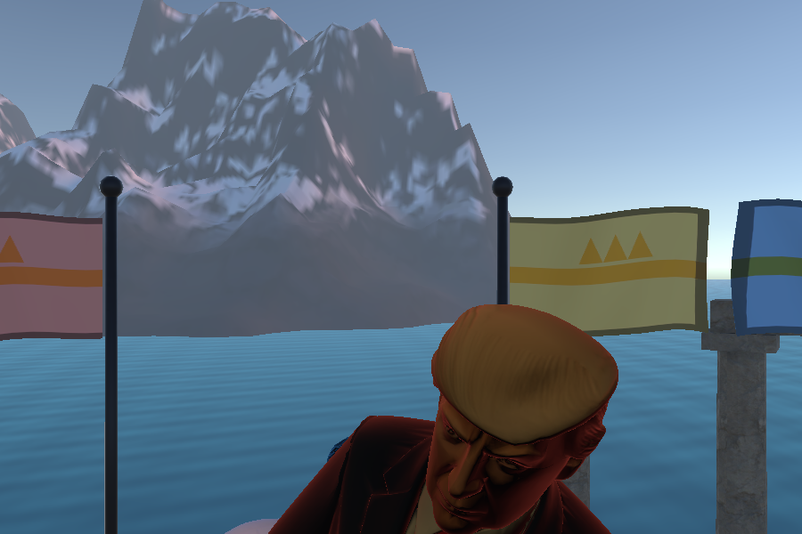

Mountain map upgrade
261019. GFX & Audio option 8. Blender 5.2.2 LTS (Microsoft Store build) run headless on tools/make_mountain_map.py;
no Blender MCP server is connected to this session, so the scene was built by the repo's own generator script, which is the map's source of truth.
Render only: the collision dome is untouched, the summit inside 1.9 m equals it in every level of detail, and no prop stands within 3.2 m of the
centre (banners 3.4 m). Captures are camera renders without the HUD; the overview is ParityBatch.MapOverview.
1. The whole hill


123- Three banners on poles, 3.4 m out behind the summit, in the first three seat colours with a gold band and crown.
- A broken colonnade on a stone platform on the far slope: five columns (two carry a lintel), a fallen drum.
- Fourteen crags: broken rock clusters 3.6-6.5 m out, none on the broadcast camera's side.
2. From the game's cameras
The broadcast camera frames the summit from Unity z = -6.2, so props were kept off that side (CAMERA_SIDE in the script): they stand behind
the fight and never between the camera and a fighter.




123- Banner behind the fighters.
- The colonnade.
- A crag on the skyline.
3. Banners in the wind
FX/Banner.shader moves the cloth in the vertex stage: a wave travelling out along the flag and a faster flutter, both growing with the
distance from the pole, the flag pushed downwind, and the shading normal tilted by the wave's slope so the folds read as moving light and dark bands.
MatchFx publishes the wind as the global _KothWind: a breeze of 0.3 (plus up to 0.5 from the live weather's wind speed), 1.3 along
the gust during a Hazards gust (measured: 0.30 calm, 1.30 one second into a gust, back to 0.30 after it).



4. Levels of detail and baked shading
| Mesh | Vertices | Notes |
|---|---|---|
| Mountain_LOD0 | 51 265 | As before: dense rings from the plateau rim to 6 m. |
| Mountain_LOD1 | 15 409 | Every ring inside 2.5 m kept, every second ring and angle beyond. The Low quality preset forces it (QualityTier calls LODGroup.ForceLOD(1)). |
| Mountain_LOD2 | 5 113 | Every fourth beyond 2.5 m; far views only. |
| Crags / Ruins / Banners + poles | 11 805 / 811 / 351 + 222 | Box-mapped UVs; caps triangulated so the FBX carries tangents. |
Unity's FBX importer makes the three _LODn meshes a LODGroup by itself. Forcing LOD2 for a frame changes the shading over the whole hill while
the separate rock meshes stay pixel-identical, so the switch works. Ambient occlusion is baked in Cycles (48 samples, 1.2 m reach) from the hill, the
crags, ruins, rocks and poles into the mask's occlusion channel: mean 0.87 over the hill, 5th percentile 0.56. The first bake read 0.25 because LOD1 and
LOD2 lie on the same surface and occluded everything; they are now hidden while it bakes.
5. Source files
tools/make_mountain_map.py: the generator (run headless; the Store build through%LOCALAPPDATA%/Microsoft/WindowsApps/blender-launcher.exe).Assets/Art/Raw/Mountain~/Mountain.blend: the archived scene (the~stops Unity from trying to import a .blend), with a README.Assets/Art/Exports/GLB/Mountain.glb: a self-contained GLB copy for reference (26 MB, textures embedded).Assets/PoKingHill/Maps/Mountain:mountain.fbxand its textures, plus newruin_albedo,banner_albedo,pole_albedoand the materials RuinStone, PoleMetal, BannerCloth.